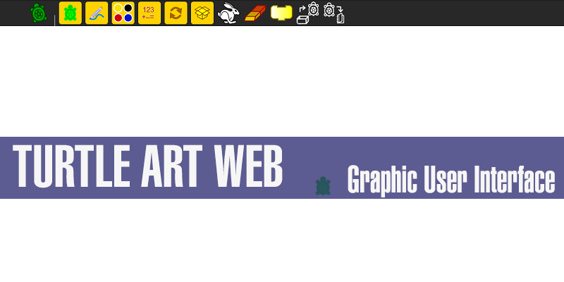
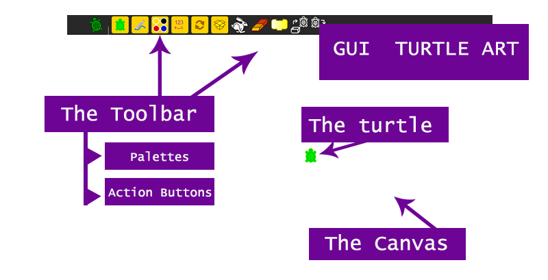

In this first tutorial are shown the basic structure of the App, all the parts conformed it and how does these things work.
Turtle Art is an App that allows drawing by controlling a tiny turtle using blocks. Depending on what you want to draw and how you want to draw it, thereby the blocks that you are going to use.
The Interface from Turtle Art App is vey simple, it has a toolbar which contains the different palletes of the functions to give to the turtle, action buttoms and the canvas in which the drawing will be.
The Toolbar: It is a black square located at the top, which contains all the functions and actions that manages the turtle and the canvas. Inside the toolbar are two different menu's, which are:
* The Palettes: the palettes are in charge of all the functions that the turtle can realize, such as drawing actions, the turtle movement and color settings.
* The Action Buttons: This buttons are in charge of the actions that the user can make with the App, such as Save file, Open file, Run file.
The Turtle: Is the tiny green image of a turtle that is on the canvas. The turtle is like the pencil/pen/brush/etc. in the canvas and you just have to give orders to it.
The Canvas: The canvas is all the white space behind the turtle, is the one that shows everything that the user has drawn by using the blocks.
The Rabbit (Run File) :) By pressing this button, the App will execute all the blocks that the user has join to create the drawing.
The Eraser: After pressing this button, the App will delete any drawing that had been made by the user. This will affect only the drawings in the canvas and will not erase any of the blocks that the user had been chosen.
The Block: This button will only make visible or non-visible the Blocks after been pressed. It will not change anything in the blocks.
Open: With this option you can open projects that you already save, it can be projects that you save on the Turtle Art Web or the desktop version of Turtle Art
Save: With this option you can save the projects which you are been working.
The Palettes ... continue on tutorial 2